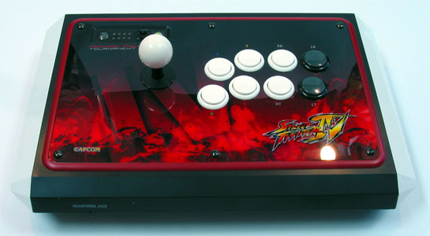

Brand and Custom Arcade Controller Makers
Here are some joystick controller builder names and some info on them. Higher quantity builders will be categorized under brand makers, while hobby quantity builders will be under custom makers.
Note that I cannot vouch for the services of all the sellers here as I have not dealt with most of them.
Brand Makers
Many brand controllers can be modified to use different and/or better parts, as well as PCBs. Various instructions for altering different models of controllers are available from other sites.
Image: Hori Real Arcade Pro 3
Hori
Hori is the world’s biggest manufacturer of arcade-style joystick controllers by a wide margin, and has been for a long time. Their joysticks come in two main varieties, smaller budget ones, and the Hori Real Arcade Pro which only recently began retailing internationally.
Most their joystick controllers use Hori's own lower quality knockoffs of Sanwa parts. The HRAP always has an authentic brand joystick, but can have various quality buttons.
Hori Real Arcade Pro
- Sega-style 8-button layout
- Sanwa JLF with PCB and wire harness standard, Seimitsu LS-32 in Seimitsu Editions; sometimes has welded bracket for both JLF and LS-32; joystick height about 23.5mm
- Sanwa Editions use OBSF buttons, Seimitsu Edition use PS-14 buttons, other editions usually use Sanwa knockoff buttons
- Trapezoidal box made with 1.5mm-4mm thick light plastic measuring 14-1/2" to 15-5/8" x 9-3/8" x 2-9/16" to 3" (370mm to 400mm x 240mm x 65mm to 75mm), with 2mm adhesive rubber feet (making it about 2-3/4" high at the front), having crossing sheets of plastic for support; box resembles a large bowl when opened
- Top panel made of 1.6mm thick 12-3/4" x 7-1/2" to 7-11/16" (325mm x 190mm to 195mm) tempered steel with curved front, covered with a 0.3mm thick decorative sticker
- 3 degree slope
- Bottom panel made of 1mm thick trapezoidal 14-3/4" to 15-7/8" x 9-1/4" (375mm to 400mm x 235mm) tempered steel with rounded corners
- Wired with 26 gauge stranded wire, .110" crimped double-barrel quick disconnects into small PCB
- General turbo, analog stick command (makes the joystick work off d-pad, left analog, or right analog), and home buttons
- 120" (3m) cord
There is a number of things I dislike about Hori joysticks. They lack space for placing the palms. They usually (especially the HRAP) use eight-button layouts when I prefer six and do not like button plugs. They have bolts on the surface, though they tend not to get in the way. The plastic for the controller box is weaker than wood or metal. The knockoff buttons are of lower quality. And the HRAP is pretty bulky.
If you want a high quality joystick doing little or no work yourself, Hori joysticks have some easy solutions. (link)

Image: Madcatz SFIV Arcade FightStick Tournament Edition
Madcatz
Madcatz recently decided to get involved in the arcade controller market, and, at the moment, many people at the company were surprised by the demand (though many people more familiar with joysticks were not) and their SFIV controllers are at a shortage. But Madcatz has decided and announced they are going to keep producing these controllers to meet demand.
Markman was at the center of the design of the Madcatz joysticks and they do have a great deal of quality because of this. The Standard Edition controller is smaller and uses knockoffs of Sanwa parts, while the Tournament Edition is larger and uses all Sanwa joysticks and buttons.
Arcade FightStick Tournament Edition
- Vewlix-style 8-button layout
- Sanwa JLF w/ standard mounting plate and PCB with wire harness connection; contains welded bracket also compatible with Seimitsu LS-32 S-plate; joystick height about 22.5mm
- Sanwa OBSF-30 buttons, 6 white, 2 black/grey
- Sanwa OBSF-24 buttons, 2 white, mounted on the right part on the back side of the box
- Chamfered rectangular box made with 1.5mm-4mm thick light plastic measuring 16" x 10 " x 2.5" (400mm x 250mm x 64mm), with 1/4" screwed on rubber feet (making it 2-3/4" high), having a plastic sheet go through the middle for reinforcement and installation of the PCB and wiring
- Top panel made of 1.5mm thick 12-5/8" x 7-2/3" (320mm x 195mm) tempered steel with rounded corners, covered with a 1mm thick plastic decorated sticker; the panel installs in a plastic roundovered rim that is highest where it meets the panel (it does not interfere) so that the panel installs flush in the box
- 0 degree slope (it looks like it slopes, but it does not); you can make it slope by elevating the rear feet on a board or something similar
- Bottom panel made of 1.2mm thick 13-9/16" x 8-9/16" (345mm x 217mm) tempered steel with rounded front corners
- Wired with 22 gauge stranded wire, .110" crimped double-barrel quick disconnects with heat-shrink tubing covers, .110" terminal strip, wire harnesses, into small PCBs
- Individually assigned turbo, analog stick command (makes the joystick work off d-pad, left analog, or right analog), tournament lock (disables turbo and option buttons), and home buttons, and a headphone jack
- 160" (4m) cord with a storage compartment
- Warranty sticker on one of the bottom panel screws; opening the controller voids the warranty.
The design has many similarities to Hori and therefore some of the things I dislike as well. I feel it does not have enough space for the placement of the palms (it is slightly better than Hori in this aspect). It has an eight-button layout. It has bolts on the surface, though they tend not to get in the way. The hollow plastic used for the controller box feels kind of weak, weaker than Hori versions. Opening the controller is a bit difficult (and voids the warranty); the bottom screws are difficult to turn and wear easily; because of slightly small holes, removing the snap-in buttons is difficult (I suggest using gloves and/or tools for this); there is also a lot of annoying glue on many fasteners. As a newly manufactured product, they often come with some light scratches on the control panel (mine did). And the controller box is pretty bulky.
The Madcatz controllers have some things improved over the Hori designs. They are actually new designs and not the stale rehash of the same thicker designs Hori has been using over and over again; the layout is different, though I'm not partial to either the Sega or Vewlix layout. The tournament lock switch, individual turbo settings, cord compartment (though wireless and a USB connector would have been better, and more expensive), wire harnesses and terminal strip, heat-shrink tubing, and headphone jack are great additions.
The Madcatz TE joystick is another great choice for people wanting a high quality joystick. (link)
Image: X-Arcade Solo (modified with Happ Competition Joystick and Buttons)
X-Arcade
Early on I purchased an X-Arcade Solo and was disappointed (it came straight from them with a dead microswitch in the joystick). They use knockoffs of the Happ Super Joystick and Happ Horizontal Pushbuttons manufactured by the Chinese company Bao-Lian Industry. The joystick can miss or even neutrally hit microswitches. The buttons pivot around in their cylinders and get stuck as they are pressed and released. The PCB even lags. I tried tweaking the parts on my own, but it was a fruitless waste of time and effort.
If you like Happ, you can replace the joystick and buttons with their parts easy enough (though unbolting the joystick and overcoming the lightly glued buttons is a pain). But you will still have to use a poor layout with over-spaced, not-arched buttons and a joystick placed too far away. And I do not even recommend Happ parts anyways. Sanwa and Seimitsu parts do not fit in this controller without some added routing and drilling. (link)
HanaHo
Mainly a cabinet maker, they offer the HotRod Joystick. It looks very similar to the X-Arcade stick. But they do not put a button in the bottom middle that really gets in the way. And they actually use Happ parts (Super Joystick and Horizontal Pushbuttons) and do not charge very much, so I will give them a moderate-quality assessment. Unfortunately, they do not offer a single-player controller. (link)
Arcade-in-a-Box
One of the better American controller makers, they give you some choices for the layout and parts (including Sanwa) used in the controller. A nice option for those not wanting to make their own controller. (link)
Mas Systems
Mas Systems puts together some decent Happ-based controllers with a pretty nice structure (which you perhaps would like to imitate if you are making a custom controller). They tend to use the squared American-type layouts too. They are also a bit notorious for being slow in delivery, and having some PCB problems. (link)
Mayflash
Mayflash makes a very inexpensive version of an arcade controller similar to the ones by Hori that can be modified with arcade parts. (link)
Norris Arcade Sticks
TMO Gaming / Timoe have decided to setup shop and produce on a larger scale a few types of joystick cases and controllers. Based on their custom work before, I can already give them a strong recommendation. (link)
Custom Makers
Here are some commissioned and/or trading custom joystick controller builders. I will not compare each on quality. However, I do consider them all high-quality makers. Some of their work can also inspire you in your own custom controller.
I cannot say I am all that familiar with many of the custom builders, but there are some names that I hear often, and some from whom I have seen a lot of work. Note that I am probably going to be more biased toward those I know better, and I will probably have a little more bias toward those with their own website; and given most my social communities center in the U.S., many of them will be there. Many of these builders trade on the Shoryuken (link) trading forum. (If any builder feels like submitting some information, link, and/or image, or some other suggestion, contact the author.)
Consider this subsection a work in progress that will probably never resemble being finished; it will probably be a mess. It may get very out of date depending on what is going on in each maker's life; do not put them in the same context of those who produce controllers in larger quantities; getting a controller from one of them will depend a lot on many variables including communication and timing; some of them are more exclusive than others, some so booked they are not available.
Given the nature of custom, individual work, I cannot keep up with the status of each builder. For all I know, any one of them could be anywhere from prolific to retired at any given time.
Byrdo
An artist with a great website, and one of the main people to elevate the quality of custom controllers. His name is synonymous with custom joysticks in many communities. Also note how he started with Happ parts and moved more to Sanwa and Seimitsu parts. Located in the U.S. (link)
Big Pockets
Big Pockets thinks very abstractly and goes farther than probably any current builder using many different materials in his custom joysticks. He does very exclusive work. Located in the U.S.
Jaxel / Crooked Jester
Jaxel has a very direct and convenient website for his services listing the options and costs for various things. Some nice work, you can see examples for yourself. Located in the U.S. (link)
Kaytrim
Kaytrim makes very attractive cases using quality hardwoods and nice sloping. Located in the U.S. (link)
Laurie
Laurie also makes very nice controllers using nice wood and quality finishing. Located in the U.K. (link)
Finkle
Located in Canada. (link)
PC1X1
Located in the U.S. (link)
Axis Gaming
Located in the U.S. (link)
DJ Matrix
Located in the U.S. (link)
Lionheart
Located in the U.S. (link)
Hahano
Located in the U.S. (link)
Some other names with whom I am familiar include Paik4Life, Dreaded Fist, Fjod, Gl0ry, Sex Instructor, and Zombie CPT. As far as I know, they are not producing sticks right now.